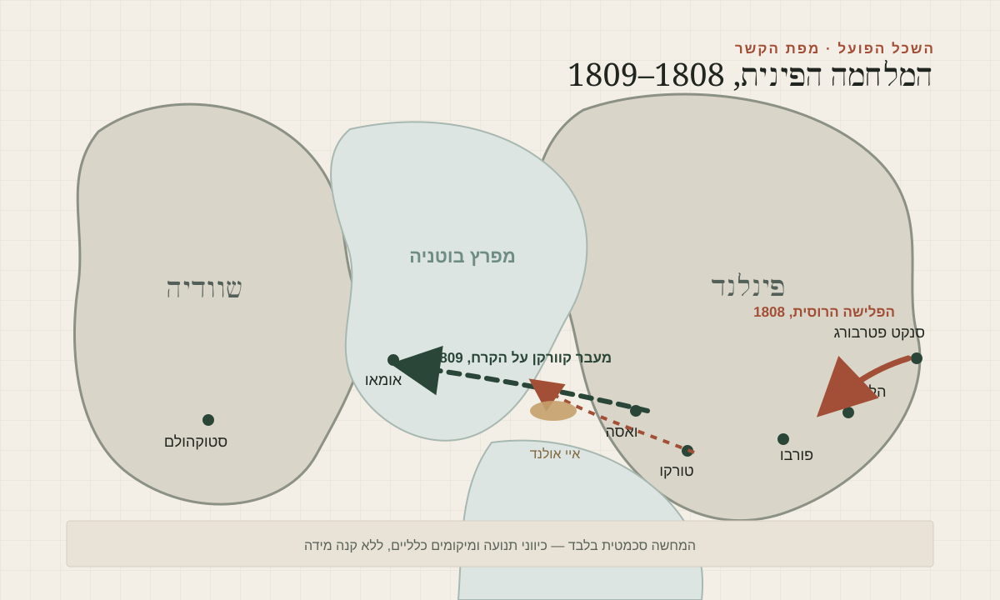
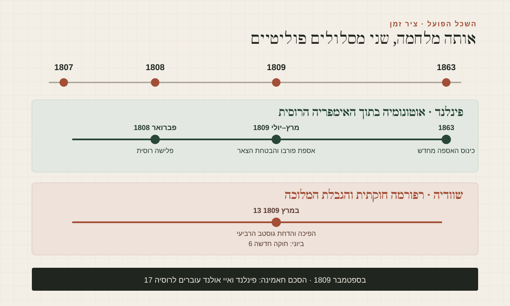

היסטוריה · יחסים בינלאומיים · זיכרון לאומי
המלחמה שבה פינלנד נולדה מחדש — בלי לקבל עצמאות
ב־1808 נלחמו רוסיה ושוודיה על השליטה בים הבלטי. שנה וחצי אחר כך איבדה שוודיה את פינלנד, רוסיה קיבלה דוכסות גדולה חדשה, ושתי המדינות עברו משבר חוקתי. מאחורי המלחמה שנראתה כעוד פרק במאבק בין אימפריות הסתתר תהליך ארוך יותר: היווצרותה של פינלנד כיחידה מדינית מובחנת.
השם „המלחמה הפינית” עלול להטעות. בפברואר 1808 לא הייתה קיימת מדינה פינית עצמאית שיצאה למלחמה נגד רוסיה. פינלנד הייתה החלק המזרחי של ממלכת שוודיה במשך מאות שנים, ותושביה היו חלק מן הממלכה: דוברי פינית ושוודית, איכרים, סוחרים, אנשי כמורה, פקידים וחיילים ששירתו בצבא השוודי. המלחמה התנהלה בין ממלכת שוודיה לאימפריה הרוסית, על אדמת פינלנד ובהמשך גם בצפון שוודיה. רק לאחר התבוסה והסכם השלום של 1809 נוצרה מסגרת מדינית חדשה בשם הדוכסות הגדולה של פינלנד.
דווקא משום כך זהו סיפור היסטורי מעניין כל כך. מלחמה שלא הייתה מלחמת עצמאות פינית יצרה את התנאים המוסדיים שבתוכם תוכל להתפתח בעתיד פינלנד המודרנית. לאומיות לא הופיעה כאן בן־לילה, ולא הייתה תוצאה אוטומטית של ניצחון צבאי. היא צמחה מתוך שינוי גבולות, מוסדות, שפה, זיכרון ציבורי ומאבק על השאלה מהי בכלל „פינלנד”.
המלחמה המקומית שהתחילה בהסכם באירופה
כדי להבין מדוע רוסיה פלשה לפינלנד, צריך להתרחק מן היערות והאגמים של הצפון אל שולחן המשא ומתן של נפוליאון. ביולי 1807 נפגשו נפוליאון ואלכסנדר הראשון בטילזיט, לאחר ניצחונות צרפת על פרוסיה ורוסיה. ההסכמות ביניהם עיצבו מחדש את מאזן הכוחות באירופה והכניסו את רוסיה למערכת החרם הכלכלי שנפוליאון ניסה לכפות על בריטניה — „המערכת הקונטיננטלית”, שנועדה לנתק את המסחר הבריטי מנמלי היבשת. שוודיה, בעלת ברית של בריטניה, סירבה להצטרף למסגרת הזאת. פינלנד, הסמוכה לסנקט פטרבורג ובעלת חשיבות אסטרטגית לים הבלטי, נעשתה נקודת הלחץ שבאמצעותה יכלה רוסיה לכפות על המלך השוודי לשנות את מדיניותו. ההקשר הזה מתואר במחקרו של ההיסטוריון הצבאי לאסה לאקסונן על המלחמה בתוך המלחמות הנפוליאוניות.
הפלישה הרוסית החלה בפברואר 1808, והצבא השוודי לא היה ערוך היטב למתקפה. הכוחות הרוסיים התקדמו במהירות יחסית, בעוד השוודים נסוגו צפונה וניסו לשמר את צבאם לקראת מתקפת נגד. בהמשך הצליחו השוודים להשיג כמה הצלחות מקומיות, אך התמונה האסטרטגית השתנתה בהדרגה לרעתם. עד סוף 1808 הייתה פינלנד ברובה תחת שליטה רוסית. המלחמה, שהייתה יכולה להיתפס בתחילתה כמנוף לחץ על שוודיה, הפכה לכיבוש טריטוריאלי של ממש.
הגאוגרפיה הפינית הקשתה על שני הצדדים. יערות צפופים, אגמים רבים ורשת דרכים דלה הפכו תנועה של צבאות, תותחים ואספקה למשימה מורכבת. לאקסונן מדגיש שהמערכה הפינית לא דמתה לקרבות הגדולים של מרכז אירופה: לא ניתן היה להעתיק אליה בפשטות את התמרונים המהירים של צבאות נפוליאון. צבא יכול לנצח בקרב ועדיין להיתקע בלי מזון, סוסים, תחמושת או דרך עבירה. המלחמה הזאת מזכירה עד כמה תכנון צבאי הוא גם בעיה של גאוגרפיה, אקלים ותשתיות.

סיבורג: מבצר, כניעה ומיתוס של בגידה
אחד האירועים שסימנו את התמוטטות ההגנה השוודית היה נפילת מבצר סיבורג, כיום סואומנלינה, מול חופי הלסינקי. המבצר נחשב במשך שנים לאחד ממוקדי הכוח הצבאיים החשובים ביותר של שוודיה בים הבלטי וזכה לכינוי „גיברלטר של הצפון”. באביב 1808 נכנע מפקדו, האדמירל קרל אולוף קרונסטדט, לרוסים. יחד עם המבצר נפלו לידיהם גם אמצעי לחימה וכלי שיט של הצי החופי. מבחינה צבאית הייתה זו מכה קשה, משום שהמבצר נועד להחזיק מעמד ולשמש בסיס שממנו ניתן יהיה להחזיר את השליטה בדרום פינלנד.
בשוודיה ובפינלנד הפכה הכניעה במהרה לסיפור מוסרי: קרונסטדט הוצג כבוגד שמסר את המבצר לאויב. אבל מחקרו של קארל נורדלינג על המצור והכניעה מראה שהשאלה מורכבת יותר. המבצר היה חזק, אך עמד בפני קשיי אספקה, בידוד, לחץ צבאי וחוסר ודאות לגבי הגעת תגבורת. אין בכך כדי להוכיח שההחלטה הייתה נכונה; יש בכך כדי להזהיר מפני פסק דין היסטורי שניתן מתוך ידיעת התוצאה בלבד. גם ההיסטוריה של סיבורג היא היסטוריה של זיכרון: מי שהפסיד במלחמה ביקש למצוא אדם אחד שאפשר להטיל עליו את האשמה.
הצבא צועד — והקהילות המקומיות משלמות
במפות צבאיות המלחמה נראית כתנועה של חצים בין ערים ומבצרים. עבור התושבים היא הייתה גם משבר של אספקה, רכוש וביטחון. צבא של אלפי חיילים אינו יכול להתקיים רק מן המטען שהביא עמו: הוא זקוק למזון, מספוא לסוסים, עגלות, בהמות, מחסה, עצים להסקה ומידע על הדרכים. כאשר מערכת האספקה אינה מספיקה, הצבא נשען על האוכלוסייה המקומית — לעיתים באמצעות רכישה, לעיתים באמצעות החרמה ולעיתים בכפייה. עבודת הדוקטור של יוסי יסקלאיינן מאוניברסיטת Åbo Akademi בחנה במפורש את הקהילות המקומיות גם כמשאב לוגיסטי של הצבא הרוסי וגם כמטרה לנזקי המלחמה.
ההבחנה הזאת משנה את הדרך שבה קוראים את המלחמה. היא לא הייתה רק עימות בין שתי ממשלות או בין שני צבאות מקצועיים. היא חדרה אל חיי היומיום של מי שלא קיבלו החלטות מדיניות ולא בחרו את מיקום החזית. גם פעולות התנגדות מקומיות וגרילה התרחשו באזורים שונים, אך אין להפוך אותן בדיעבד לצבא לאומי מאוחד. פינלנד של 1808 הייתה חלק מממלכה שוודית, והאוכלוסייה לא פעלה כגוף פוליטי אחיד בעל ממשלה, פיקוד או תוכנית עצמאית.
שתי מהפכות חוקתיות משני צדי המפרץ
ב־1809 התרחבה המלחמה אל שטח שוודיה עצמה. אחת הדוגמאות החריגות הייתה צעדת כוחות רוסיים על פני הקרח באזור קוורקן, המצר שבין ואסה בפינלנד לאומאו בשוודיה. המעבר, שתועד גם במקורות ההיסטוריים המקומיים של אזור קוורקן, המחיש עד כמה האקלים יכול להפוך למכשיר אסטרטגי: הים הקפוא, שבקיץ מפריד בין שתי גדות, נעשה בחורף נתיב תנועה לצבא. האיום הרוסי על שטח שוודיה החריף את המשבר הפוליטי בסטוקהולם.
ב־13 במרץ 1809 נעצר המלך גוסטב הרביעי אדולף בהפיכה צבאית. ההפיכה לא הייתה רק תגובה לתבוסה בפינלנד; היא ביטאה גם משבר עמוק ביחסים בין המלך, הצבא והאליטות השוודיות. עד 10 במאי הודח המלך בידי הריקסדאג — הפרלמנט השוודי של ארבעת המעמדות. ב־6 ביוני 1809 התקבלה חוקה חדשה, „מסמך הממשל” (Instrument of Government), שביטלה את האבסולוטיזם המלכותי והעבירה חלק ניכר מן הכוח אל הריקסדאג. זו עדיין לא הייתה דמוקרטיה פרלמנטרית מודרנית, אך היא יצרה איזון חוקתי חדש בין המלך לבין נציגי המעמדות. אתר הפרלמנט השוודי מתעד את רצף האירועים ואת משמעות החוקה.
באותה שנה, בצד המזרחי של המפרץ, התפתח תהליך שונה. הצאר אלכסנדר הראשון כינס את נציגי ארבעת המעמדות של פינלנד — האצולה, הכמורה, העירונים והאיכרים — לאספת המעמדות בעיר פורבו, שנקראה בשוודית בורגו. האספה התכנסה בין מרץ ליולי 1809. הנציגים נשבעו אמונים לצאר, והוא התחייב לשמור על הדת, החוקים והזכויות שהיו נהוגים בפינלנד תחת השלטון השוודי. כך הונחה התשתית לדוכסות הגדולה של פינלנד, שהייתה חלק מן האימפריה הרוסית אך שמרה על מסגרת משפטית ומנהלית מובחנת.

הסכם פרדריקסהאמן, שנחתם ב־17 בספטמבר 1809 בעיר המוכרת כיום בשם חאמינה, סיים את המלחמה. שוודיה מסרה לרוסיה את פינלנד ואת איי אולנד, וכן שטחים נוספים מצפון למפרץ בוטניה. ההסכם חייב את שוודיה גם להצטרף למערכת החרם היבשתית נגד בריטניה. מחקרו של ההיסטוריון פטרי קרונן על ההסכם מדגיש שהמסמך לא עסק רק בגבולות: הוא כלל הוראות שנועדו להבטיח את המשך הפעילות הכלכלית, להגן על רכוש פרטי ולהסדיר את מעמדם של תושבי השטחים שעברו לריבונות חדשה.
ההבדל בין שני המסלולים החוקתיים חשוב. בשוודיה נוצרה חוקה חדשה בעקבות הפיכה והדחה של מלך. בפינלנד לא נוצרה עצמאות ולא הוקמה דמוקרטיה מודרנית; השלטון העליון עבר לצאר, אך חלק גדול מן החוקים, המוסדות המקומיים והסדרים החברתיים שהיו נהוגים תחת שוודיה נשמרו. קרונן מתאר כיצד הדוכסות הגדולה נבנתה על גבי המסגרת המשפטית והחברתית השוודית, תוך יצירת מנגנון שלטוני מרכזי חדש. זהו אחד המקרים המעניינים שבהם אימפריה הרחיבה את שליטתה דווקא באמצעות שימור חלק מן המוסדות של השלטון הקודם.
האם פינלנד נעשתה מדינה ב־1809?
כאן מתחיל ויכוח היסטוריוגרפי חשוב. במשך שנים תוארה אספת פורבו כרגע שבו פינלנד „נולדה כמדינה”. אלא שהניסוח הזה עלול להשליך לאחור מושגים מאוחרים יותר. לפני 1809 הייתה פינלנד יחידה גאוגרפית ותרבותית מוכרת, אך מבחינה מוסדית הייתה משולבת עמוק בממלכת שוודיה. אחרי 1809 היא קיבלה מוסדות נפרדים ומעמד של דוכסות גדולה, אך לא הייתה ריבונית: הצאר היה השליט העליון, והאספה הפינית לא התכנסה שוב עד 1863, כפי שמתואר גם בההיסטוריה הרשמית של הפרלמנט הפיני. מחקרם של יוסי קורונמקי ויאני מריאנן מראה כיצד עצם הרעיון של פינלנד כיחידה מדינית וכ„מדינה” התגבש בהדרגה במהלך המאה התשע־עשרה, דרך השוואה למדינות אחרות, ויכוחים על חוקה, עיתונות, מוסדות ותרבות.
הפער של 54 שנים בין אספת פורבו לאספה הבאה אינו פרט טכני. הוא מלמד שהאוטונומיה הפינית הייתה ממשית אך מוגבלת. מצד אחד, נשמרו חוקים ומוסדות שהבדילו את פינלנד משאר המחוזות של האימפריה. מצד אחר, לא התקיים פרלמנט סדיר שיוכל לבטא את רצון התושבים או להגביל את הצאר. ההיסטוריונים קורונמקי ומריאנן מצביעים על כך שהשאלה אם פינלנד הייתה כבר ב־1809 „מדינה חוקתית” לא הייתה מוסכמת אפילו בקרב בני התקופה. לכן נכון יותר לדבר על התחלה של מסגרת מדינית, ולא על לידתה השלמה של מדינת הלאום.
איך תבוסה הופכת לסיפור לאומי
המלחמה לא הסתיימה כשהחיילים הפסיקו להילחם. היא המשיכה להתקיים בזיכרון. בשנת 1848 פרסם המשורר הפיני־שוודי יוהאן לודוויג רונברג את החלק הראשון של „סיפורי הקצין שטול” (Fänrik Ståls sägner), ואת החלק השני ב־1860. היצירה, שנכתבה בשוודית, הציגה פרקים מן המלחמה דרך דמויות של חיילים פשוטים, אומץ לב, הקרבה ונאמנות. אחד משיריה, „ארצנו” (Vårt land), נעשה לימים ההמנון הלאומי של פינלנד. כך קיבלה תבוסה צבאית צורה ספרותית שהדגישה לא רק את אובדן השטח, אלא גם את אופיים ואת גבורתם של האנשים שחיו בו.
המחקר ההיסטורי מראה שהיצירה פעלה בשני מרחבים שונים. קוראים פינים יכלו לראות בה תיאור של אופי לאומי פינִי מובחן; קוראים שוודים יכלו לקרוא אותה כסיפור על נאמנותם של הפינים לממלכה שאיבדה אותם ועל השבת הכבוד השוודי. מחקר שפורסם ב־The Historical Journal בשנת 2023 מתאר כיצד ספרו של רונברג עיצב את הדמיון הלאומי בשתי המדינות. זהו קשר מעניין בין ספרות להיסטוריה פוליטית: לפעמים שיר אינו רק מתעד אירוע, אלא מעניק לקהילה שפה שבה היא יכולה לספר לעצמה מי היא.
לכן אין לקרוא את „סיפורי הקצין שטול” כפרוטוקול צבאי. זו יצירה רומנטית ופטריוטית, שנכתבה עשרות שנים לאחר המלחמה ובתוך תקופה שבה רעיון הלאום הפך לכוח פוליטי. מחקר של אוניברסיטת אולו בחן את היצירה גם דרך מושגי תעמולה ובניית זהות, והראה כיצד בחירת דמויות, סמלים ונקודות מבט יכולה להפוך זיכרון של תבוסה לסיפור שמלכד ציבור. אין פירוש הדבר שכל פרט ביצירה בדוי; פירוש הדבר שהאמת ההיסטורית והאמת של הזיכרון הלאומי אינן אותו דבר.
המלחמה לא יצרה עצמאות — היא יצרה אפשרות
במבט לאחור קל לראות את 1809 כתחנה בדרך לעצמאות פינלנד ב־1917. אבל מסלול כזה לא היה מובטח מראש. המלחמה נולדה מתוך מאבק בין מעצמות על שליטה בים הבלטי ועל החרם הכלכלי נגד בריטניה. תושביה של פינלנד לא ניהלו אותה כמדינה ריבונית, והסדר החדש לא העניק להם שלטון עצמי מלא. ובכל זאת, הפרדת פינלנד משוודיה יצרה מסגרת מנהלית, משפטית ופוליטית שבתוכה יכלו להתפתח מוסדות, דיון ציבורי ותודעה לאומית מובחנת.
זהו אולי הלקח החשוב ביותר של המלחמה הפינית: מדינות אינן נוצרות רק ברגע שבו עם מכריז על עצמאותו. לעיתים הן מתגבשות מתוך הסדרים אימפריאליים, מתוך פשרות משפטיות, מתוך מוסדות שנשמרים במקרה ומתוך סיפורים ספרותיים שמעניקים משמעות לאירועים. פינלנד של 1809 לא הייתה פינלנד של 1917, אבל בלי השינוי הטריטוריאלי והמוסדי של 1809 קשה להבין כיצד נוצרה בהמשך המדינה העצמאית.
חמישה דברים שכדאי לזכור
- המלחמה הפינית הייתה מלחמה בין שוודיה לרוסיה, לא מלחמת עצמאות של מדינה פינית קיימת.
- העימות נבע מן הסדר האירופי שלאחר חוזה טילזיט ומניסיונו של נפוליאון לבודד כלכלית את בריטניה.
- נפילת מבצר סיבורג נעשתה לסמל של בגידה, אך החלטת מפקדו נותרה נושא לדיון היסטורי.
- ב־1809 נוצרו שני מסלולים חוקתיים שונים: חוקה חדשה בשוודיה ודוכסות גדולה בעלת מוסדות נפרדים בתוך האימפריה הרוסית בפינלנד.
- הזהות הלאומית הפינית התגבשה לאורך המאה התשע־עשרה, בין היתר באמצעות מוסדות, עיתונות וספרות — ולא ברגע אחד של ניצחון או הכרזה.
שלוש שאלות למחשבה
- האם אפשר לקרוא לישות פוליטית „מדינה” כאשר יש לה חוקים ומוסדות משלה, אך אין לה ריבונות עליונה או פרלמנט מתכנס?
- כאשר תבוסה צבאית הופכת למיתוס לאומי, האם הזיכרון משמר את העבר — או בונה עבר חדש שמתאים לצרכים של ההווה?
- מה קובע את גורלה של מדינה יותר: זהות תרבותית קיימת, מוסדות פוליטיים, או החלטות של מעצמות שכנות?
לקריאה נוספת
- Lasse Laaksonen, “The Finnish War in the Context of Napoleonic Wars” (2011) — ההקשר האסטרטגי והגאוגרפי של המערכה.
- Petri Karonen, “The Peace Treaty of Fredrikshamn and its Aftermath in Sweden and Finland” (2010) — ההסכם ותוצאותיו המנהליות והחברתיות.
- Jussi Kurunmäki ו־Jani Marjanen, “Catching up through comparison: The making of Finland as a political unit, 1809–1863” (2021) — התגבשות פינלנד כיחידה מדינית.
- הפרלמנט השוודי: החוקה של 1809 — ההפיכה, הדחת המלך והעברת הסמכויות לריקסדאג.
- הפרלמנט הפיני: Brief History of Parliament — מוסדות ארבעת המעמדות והדרך לפרלמנט המודרני.
- מוזיאון פורבו: אספת המעמדות של 1809 — רקע על המקום שבו כונסה האספה.
- Jussi Jääskeläinen, מחקר דוקטורט על לוגיסטיקה ונזקי מלחמה בקהילות המקומיות (2011) — המלחמה מנקודת מבטן של הקהילות האזרחיות.
- Carl Nordling, “Capturing ‘The Gibraltar of the North’” (2004) — המצור על סיבורג והכניעה.
- מחקר ב־The Historical Journal (2023) על רונברג והזיכרון הלאומי השוודי־פיני.
- Erkka Kaukonen, מחקר על „סיפורי הקצין שטול” כתעמולה לאומית (2018).
- Kvarken’s Nature Guide — History — ההקשר המקומי של חציית הקרח במפרץ בוטניה.